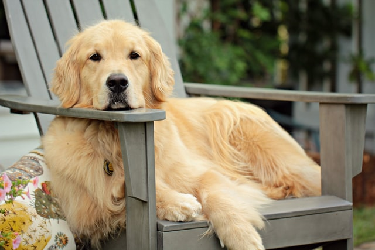

Arany retriever

A fajtáról
A golden retriever (magyarul arany retriever) skót eredetű, középtermetű elhozó vadászkutya. Gyakran alkalmazzák segítőkutyaként, de kedves, barátságos természete miatt a városlakók körében is népszerű háziállat.
Származási helye Nagy-Britannia. Kialakulása Lord Tweedmouth nevéhez fűződik
Többféle elmélet is létezik kialakulására:
- Sárga retrievert kereszteztek egy májszínű Tweed Water Spániellel.
- Sárga labrador retrieverből, Ír szetterből és Tweed spánielből alakult ki.
- Tweed spánielből és könnyebb felépítésű Újfoundlandiból alakult ki.
- Orosz cirkuszi kutya.
1913-ban választották külön a színük szerint; 1920-ban fogadta el az FCI mint önálló fajtát.
Előnyei
- Játékos
- Kiváló vadászkutya
- Szelíd pajtása a gyerekeknek
- Hibátlan temperamentumú
- Intelligens
- Könnyen képezhető
- Elsőrangú kiállítási eb
- Jó családi kedvenc, szereti a gyerekeket
- Elegáns, mindenkivel barátságos
- Energikus
- Gyors, jó a szaglása